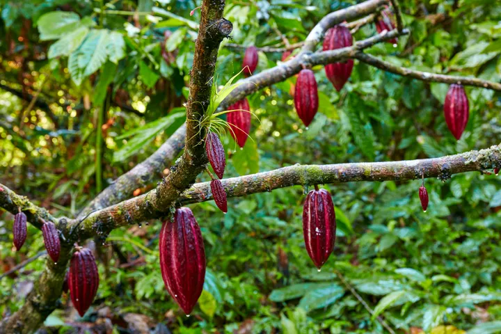

History of Cocoa
The Origins
The cacao tree (Theobroma cacao) is native to Central and South America. As early as 1900 BC, cocoa beans were used by ancient cultures like the Olmecs.
Used by Ancient Civilizations
The Mayans and Aztecs highly valued cocoa. It was made into a bitter, spiced drink and even used as currency. The Aztecs referred to cocoa as "food of the gods."

After being introduced to Europe in the 16th century, cocoa became a luxury enjoyed sweetened with sugar. It quickly gained popularity and evolved into what we now know as chocolate.
Today, cocoa is cultivated in tropical regions around the world and remains central to global chocolate production.
Back to top